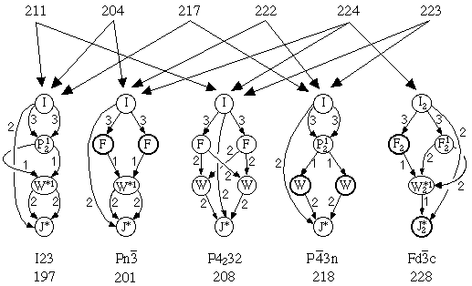
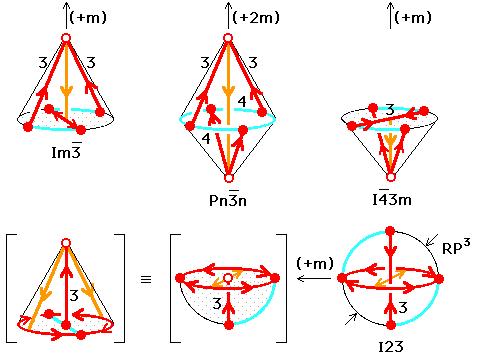

Crystallographic Topology 101
Crystallographic Topology 101

In Sect 3. we saw that critical net drawings can become rather complex even for very simple examples such as the body-centered cubic (bcc) structure. In the present section, we discuss critical nets on orbifolds, which reduce both the graphical and interpretation complexity associated with critical nets while including valuable space group topology information as well. Lattice complex information also is integrated into the model to clarify the global topology. Finally, we compare the series of bcc lattice complexes on orbifolds that develop as symmetry is systematically reduced.
Body-Centered Cubic Orbifold
The orbifold for Im m, the parent space group for bcc
structures, is derived from the fundamental domain shown in the lower
left of Fig. 4.1. The space group coordinates for the vertices of the
fundamental domain are given in parentheses as fractions of the unit
cell lengths. The arrows denote the down density critical net paths
leading from the peak at (a) to the pit at (b). Wyckoff identification
letters (a-k) are shown on the asymmetric unit drawing, and the ITCr
information on most of those Wyckoff sites is listed in the columns labeled
"Wyckoff set" in the middle of the figure. The tetrahedral fundamental
domain has three sides bounded with the top (k) and bottom
(j) mirrors with (k) bridged over the 3-fold axis as described in
Sect. 1, but the
fourth side is open (unbounded)
with a 2-fold axis (i) extending from one corner of
the open end (c) to the center (d) of the opposite face, which contains
another 2-fold axis (g).
m, the parent space group for bcc
structures, is derived from the fundamental domain shown in the lower
left of Fig. 4.1. The space group coordinates for the vertices of the
fundamental domain are given in parentheses as fractions of the unit
cell lengths. The arrows denote the down density critical net paths
leading from the peak at (a) to the pit at (b). Wyckoff identification
letters (a-k) are shown on the asymmetric unit drawing, and the ITCr
information on most of those Wyckoff sites is listed in the columns labeled
"Wyckoff set" in the middle of the figure. The tetrahedral fundamental
domain has three sides bounded with the top (k) and bottom
(j) mirrors with (k) bridged over the 3-fold axis as described in
Sect. 1, but the
fourth side is open (unbounded)
with a 2-fold axis (i) extending from one corner of
the open end (c) to the center (d) of the opposite face, which contains
another 2-fold axis (g).
Visualize the tetrahedral asymmetric unit as a single-pole pup tent, covered by a silvered rubber reflective sheet, with a support pole (i) in the entrance. A horizontal "threshold" pole (g) with a hinge in the middle (d) lies across the front of the tent floor with the hinge attached to the bottom of the support pole. To close the tent, we grab the two corners of the rubber sheets (j and k) at the two ends (b) and (b') of the hinged threshold pole (g) and bring them together stretching the extensible and flexible tent floor poles (e) and (h) in the process. We then zipper the edges of the sheet (k) together to form the bounded orbifold shown in the lower right drawings of Fig. 4.1.
The underlying topological space of this 3-orbifold is a 3-disk with silvered boundary (i.e., a silvered 3-ball). The orbifold has two trivalent dihedral corners, 4'3'2' at (a) and 4'2'2' at (b), and two cone points, 23' at (c) and 22' at (d).
Linearized Critical Net on Orbifold
Critical nets are actually Morse functions that are defined in terms of a mathematical mapping from Euclidean 3-space to Euclidean 1-space (i.e., a single valued 3-dimensional function). Taking this requirement literally, we deform the orbifold so that the Euclidean 1-space of density is vertical in the page (i.e., peak height > pass height > pale height > pit height). This adds a welcome constraint to the drawing of orbifolds that in general have no inherent topological constraints to guide the illustrator. The topologist would probably tend to draw it as a solid sphere as shown later, but we are not violating any topological principles in forming the linearized critical net on orbifold shown at the top of Fig. 4.1.
The multiplicity for each Wyckoff site is given as a column in the table and the preceding column shows the integer ratios of the multiplicities in adjacent rows, which are by design the adjacent elements in the critical net graph. These ratios tell us the coordination numbers of critical net components around other critical net components, thus summarizing much of the structural topology information you would obtain by examining ORTEP critical net stereo drawings or calculating and evaluating long tables of intercomponent distances and angles.
Resolution of the Critical Net Versus Tiling Discrepancy
The coordination numbers also provide a method for applying topological
constraints in that there must be exactly two peaks around a pass and
two pits around a pale. This particular combinatorial constraint holds
for the tiling approach of Dress, Huson, and Molnar (1993) as well as
for our critical net Morse function approach. Fig. 4.2 shows two
solutions satisfying that constraint based on the orbifold topology for
space group Fd
What's going on here? First, we note that the left configuration has seven
nodes while the right has only six, but the six in common are on the
same Wyckoff sites and point positions.
We then note that on the orbifold drawing, in the lower right of the figure,
the
h2 axis lies directly between the (e) and
(f) sites. Since a separatrix line can never traverse more than one
isometry zone (i.e. Wyckoff site zone), there has to be another
critical point at point (h). According to the special rhombohedral
indexing, this point would have to be a degenerate critical point with a
cubic (triple point) algebraic dependence rather than quadratic along
the (e) to (f) vector since the density is heading downhill along that
vector. We can always decompose a degenerate critical point into
several nondegenerate critical points, but then we would be in trouble
satisfying the Euler-Poincare relationship described in Sect. 3.
The obviously related (c) and (d) Wyckoff sites must be
assigned to the same Morse function levels, which then produces the
correct configuration shown in the lefthand drawing.
In other situations, missed critical points may make one of the critical
points found appear to be degenerate. In our experience to date, a
critical net that is not a Morse function has always been traceable to
misindexing caused by the omission of valid critical points. Once the
peak positions have been assigned by positioning atoms and assigning
their Gaussian thermal motion parameters, the rest of the critical net
is fixed; it is just a case of determining what it is. In the simple
structures we are discussing in this treatment, the thermal motion
probability density is either constrained by symmetry to be isotropic or
assumed to be isotropic and in any case has little effect on critical
net details. Thus we omit smearing functions from the discussion other
than to say they are isotropic, Gaussian, and mildly overlapping.
Body-Centered Cubic Symmetry Breaking Family
In order to point out some additional properties about orbifolds and
critical nets on orbifolds, we examine a series of related cubic space
group orbifolds that accommodate the body-centered cubic critical net.
The series of cubic space group orbifolds that are related by
group/normal-subgroup relationships starting
with Im
Notes on the above illustration:
Alternative Illustration Techniques for Critical Nets on Orbifolds
The component graphs in Fig. 4.4 were derived from space group
specific fundamental domain drawings similar to
that shown in Fig. 4.1. Fig. 4.4 also
shows the I lattice complex critical
net for each orbifold illustrated.
An alternate approach, which seems more amenable to
automation, is discussed in Appendix A. Making such sketches for the more
complex situations requires distortion of a crystallographer's normal
geometric intuition and learning some basic cut and paste tricks that
all geometric topologists seem to know but never document (i.e., the tricks
of the trade). Lacking any formal training in topology, our bootstrap
approach involved lots of reading, short apprenticeship periods with a
professional topologist consultant, and employment of topology graduate
students from the University of Tennessee part time.
In our experience, one of the more difficult tasks is describing the
underlying topological space for a space group orbifold. A simplifying
feature of the linearized critical net on orbifold drawings
shown in Fig. 4.3 is that they can be used
without fully specifying the underlying topological space details.
The drawing in Fig. 4.3 gives the connectivity of the singular set
elements within the orbifold, but antipodal gluing pattern information
is omitted from topological spaces containing RP2 or
RP3 projective planes since those elements no longer have a
conventional shape in the linearized critical net on orbifold drawing.
There are several different underlying spaces for the orbifolds presented
in Fig. 4.3 (i.e., silvered 3-ball: 229, 221, 224, 223; 3-sphere: 211,
208; real projective 3-space (RP3): 197;
double suspended projective 2-space (RP2):
222, 201, 218, 228; and singly suspended projective 2-space adjoined to
silvered 3-ball: 204, 217).
The orbifold for the parent group, Im
Orbifold Transformations
In Fig. 4.4, removing a mirror and dividing the order of
the equatorial axes by two
causes the opposite hemisphere to reproduce a mirror image of
itself as shown for the left
and right figures in the top row. They each now have a single mirror
boundary since the equator is no longer divided by even-order axes, which again
produces silvered 3-ball underlying spaces. When both mirrors are removed
simultaneously (top row middle), the entire bottom hemisphere must wrap
around to the top hemisphere carrying the interior 2-axis into a complete
loop and producing a 3-sphere underlying space, which is the normal space
for knots and links. Many polar (orientable) space groups yield orbifolds
with a 3-sphere (S3) underlying space.
To form the two outside orbifolds in the third row from the corresponding
ones on the second, we retain the mirrors shown as planes, removing the
mirrors shown as hemispheres and again reduce the order of the equatorial
axes by half. But now we have to double everything that was lying on the
hemisphere surface where the mirror was located so we now have a cone with
an antipodal identification operation on the cone's surface, which means
the
boundary cone is now a projective plane. The order of the interior 2-fold
axis is halved, and the critical net along that path shown in orange to
indicate it is now along a 1-axis (general position)
rather than a 2-axis. The resulting
underlying space is half bounded by a mirror and half by a projective
plane with a suspension point at the cone apex; thus it may be called a singly
suspended silvered ball. The middle orbifold in the third row has both
mirrors removed producing two antipodal projective plane cones and that
underlying space may be called a double suspension.
The final orbifold in the bottom row right requires a more complex set
of cut and paste operations in the transition from the third row left to
the bottom row left in which the 3-axis is moved from the cone surface
to the cone interior. This is related to the sliding gluing edge
phenomenon for projective planes described in Sects. 2.1 and 2.2. The rest of
the operations are simple repetitions of those used previously. The
underlying space for I23 turns out to be real projective 3-space
RP3. It
has an antipodal relationship relative to the center of the ball for all
points on the surface of the ball. Care must be taken not to confuse
this with a crystallographic inversion center which holds throughout
space. All antipodal relations operate only on the gluing edge, not the
interior.
Page last revised: June 12, 1996
Figure 4.1. Construction of Im3m Orbifold from Asymmetric Unit and
Superimposition of Body-Centered Cubic Lattice Complex to Form Linear
Critical Graph.
m with atoms (i.e., tiling vertices in
the Dress approach, peaks in the critical net approach) on the two  3m sites of Fdm. Fig. 4.2 compares
the two configurations assuming both are linearized critical nets on the
Fdm orbifold. The columns of numbers are sums of
Wyckoff set multiplicities for each level of the critical net and
integer ratios of neighboring rows. Only the connections between
adjacent levels are summed. An ORTEP drawing of the configuration
labeled bcc derivative is shown in Fig.
3.5. A similar drawing cannot be made for the special rhombohedral
tiling given by the second configuration since the two pales are far
from collinear with the pit.
3m sites of Fdm. Fig. 4.2 compares
the two configurations assuming both are linearized critical nets on the
Fdm orbifold. The columns of numbers are sums of
Wyckoff set multiplicities for each level of the critical net and
integer ratios of neighboring rows. Only the connections between
adjacent levels are summed. An ORTEP drawing of the configuration
labeled bcc derivative is shown in Fig.
3.5. A similar drawing cannot be made for the special rhombohedral
tiling given by the second configuration since the two pales are far
from collinear with the pit.
Figure 4.2. Comparison of Critical Net and Tiling Results.
m is shown in
the linearized critical nets of Fig.
4.3, which includes the cesium chloride and body-centered cubic
critical net crystal structure types. The symbols within the
nodes are lattice complex symbols, which will be defined and discussed
in Sect. 5. All we need to know about them for now is that I, P, and F
represent the
body-centered cubic, primitive cubic, and face-centered cubic
configurations of points, respectively, and P2
is a
primitive cubic array with doubling of periodicity along each axis.
Group/subgroup relations for the
cubic space groups are discussed in Sect. 6. and Appendix A.

Figure 4.3. Body-Centered Cubic and CsCl Critical Nets Superimposed
onto Cubic Space Group Orbifolds.
m,
which is pictured in Fig 4.1, is also shown in the
middle of the second row of Fig. 4.4. The red path shown in
Fig. 4.4 is the critical net
while symmetry axes not in the critical net are shown in blue. Two-fold
axes are not labeled. Mirrors are indicated by blue stippling. There are
two mirrors in Imm orbifold
separated at the equator by 4- and 2-fold axes. On either
side of that drawing are topologically equivalent drawings with one
hemisphere flattened.

Figure 4.4. BCC Lattice Complex Critical Nets Superimposed
onto Eight Cubic Space Group Orbifolds
 5. Lattice Complexes on Critical Nets on Orbifolds
5. Lattice Complexes on Critical Nets on Orbifolds
 3. Introduction to Critical Nets
3. Introduction to Critical Nets
 Crystallographic Topology Home Page
Crystallographic Topology Home Page